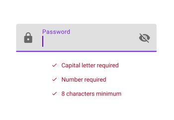
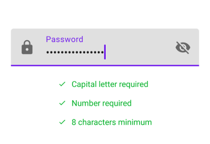

Jetpack Compose: Login Screen
3rd June 2022
This post is going to go through making a simple login screen focusing mainly on a few key features. Not all of the code will be put in here as it would be too much.
You can however find all of the code here
Toggling password visibility
You've seen it everywhere. An icon or piece of clickable text that will turn your "*************" into a visible password.
This is achieved through the use of something clickable and a VisualTransormation which you can see more of
here.
Declare a boolean piece of state to represent if the password is hidden or not. This will determine which icon is displayed. It also
changes the VisualTransformation from None to type Password which is probably the only time you might use VisualTransformation ever.

@Composable
fun PasswordInput(...) {
var isPasswordHidden by remember {
mutableStateOf(true)
}
TextField(...
trailingIcon = {
IconButton(onClick = {
isPasswordHidden = !isPasswordHidden
}) {
if(isPasswordHidden) {
Icon("Show password")
} else {
Icon("Show password")
}
}
},
visualTransformation = if(isPasswordHidden) {
PasswordVisualTransformation()
} else VisualTransformation.None)
}}

Password requirements
Many sites when you go to create an account either require that the password meet certain requirements or they might indicate a "Stength" indicator which is basically the same thing it just doesn't explicitly say what is strong.
Here we are going to have 3 mandatory password requirements: 8 characters long, a number and a capital letter.
 What we need...
To make this work we need a few things in the code:
- To define the requirements
- To store those requirements in our state
- To update the stored requirements as we achieve them
enum class PasswordRequirements(@StringRes val label: Int){
CAPITAL_LETTER(..),
NUMBER(..),
EIGHT_CHARACTERS(..)
}
data class PasswordFieldState(
val password: String? = null,
val passwordRequirements: List<PasswordRequirements> = emptyList())
private fun updatePassword(password: String) {
val requirements = mutableListOf<PasswordRequirements>()
if (password.length > 7) {
requirements.add(PasswordRequirements.EIGHT_CHARACTERS)
}
if (password.any { it.isUpperCase() }) {
requirements.add(PasswordRequirements.CAPITAL_LETTER)
}
if (password.any { it.isDigit() }) {
requirements.add(PasswordRequirements.NUMBER)
}
uiState.value = uiState.value.copy(
password = password,
passwordRequirements = requirements.toList())
}
With all that in place, all that is left is to handle that in our Composable and update the text color as necessary.
@Composable
fun PasswordRequirements(..
satisfiedRequirements: List<PasswordRequirements>) {
Column(..) {
PasswordRequirements.values().forEach { req ->
RequirementEntry(..
satisfied = satisfiedRequirements.contains(req))
}
}
}
@Composable
fun RequirementEntry(..
satisfied: Boolean) {
val tint = if(satisfied) {
BrightGreen
} else
MaterialTheme.colors.error
Row(..) {
Icon(..
imageVector = Icons.Default.Check,
tint = tint
)
Text(..
text = label,
color = tint
)
}
}
Again, you can find all of the code here
The following course gave me a great primer into Compose. Look up Joe's twitter too.